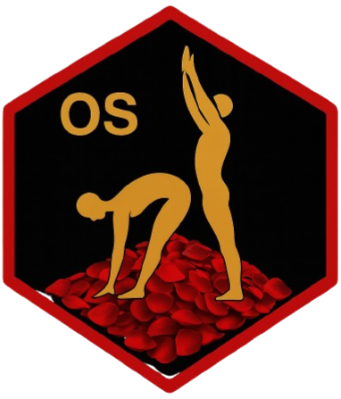

SANDBOXED DESKTOP PROFILE // PRIVACY
PRONER-OS
Hardened sandboxed desktop operating profile for adult media workflows. Implements isolated network stacks, encrypted containers, and privacy-oriented utilities for creative professionals and researchers.
ADULT – NSFW!* Profile planner only; it does not alter the host OS. This web build uses no Docker.
0/100